Цель: определить, присутствует ли на фотографии гражданский автомобильный номер российского образца
Порядок выполнения задания: для каждой фотографии нужно определить к какой из следующих категорий она относится
Основные признаки гражданских автомобильных номеров российского образца, на номере присутствует:
Основной формат российских автономеров:
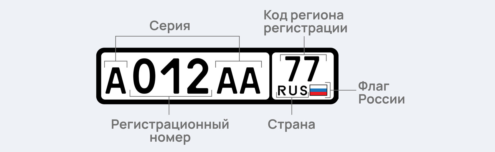Примеры:
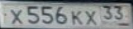 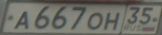 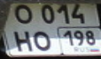 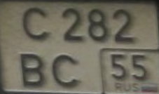Также для некоторых видов транспорта номер может содержать 4 цифры и 2 буквы или 2 цифры и 4 буквы. Номер может также не содержать изображение флага России и/или сокращенного названия.
Примеры:
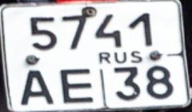 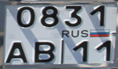 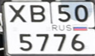 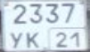В эту категорию попадают все номера, которые не вошли в первую категорию.
Примеры:
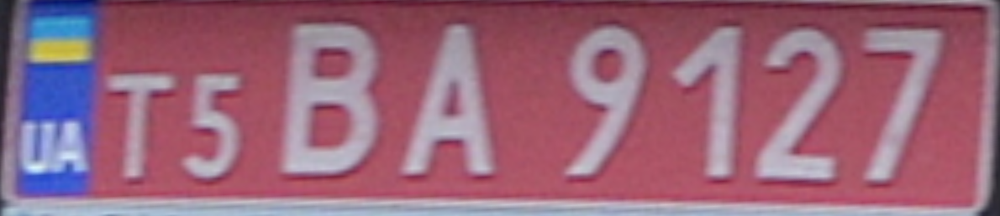На данном номере присутствует флаг и код другой страны, а также красный фон.
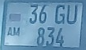На данном номере присутствует флаг и код другой страны, а также недопустимое количество цифр и буквы, не разрешенные к использованию на российских номерах.
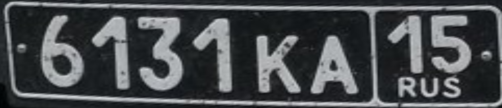Данный номер имеет черный фон, он не относится к гражданским номерам.